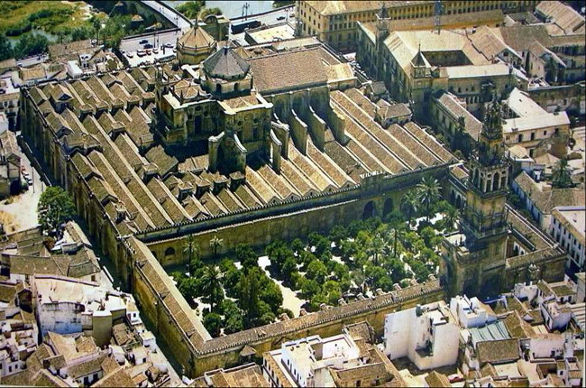
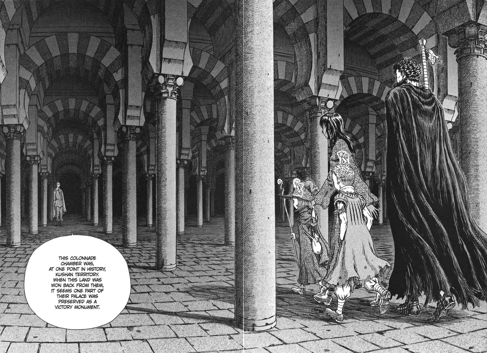
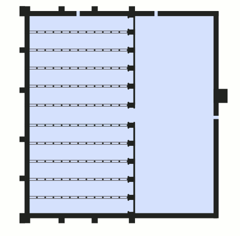
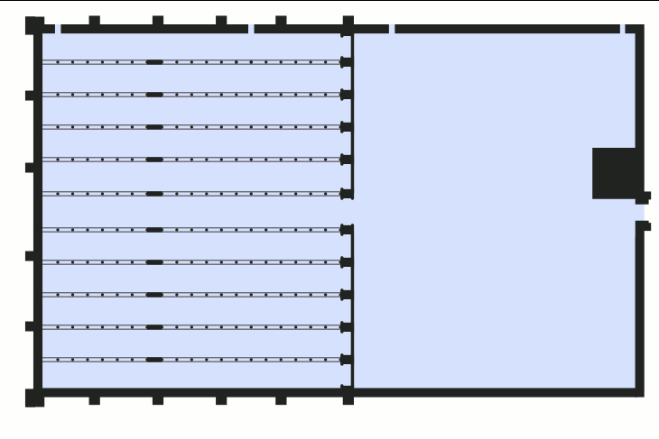
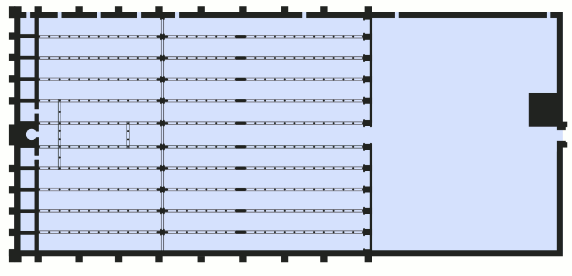
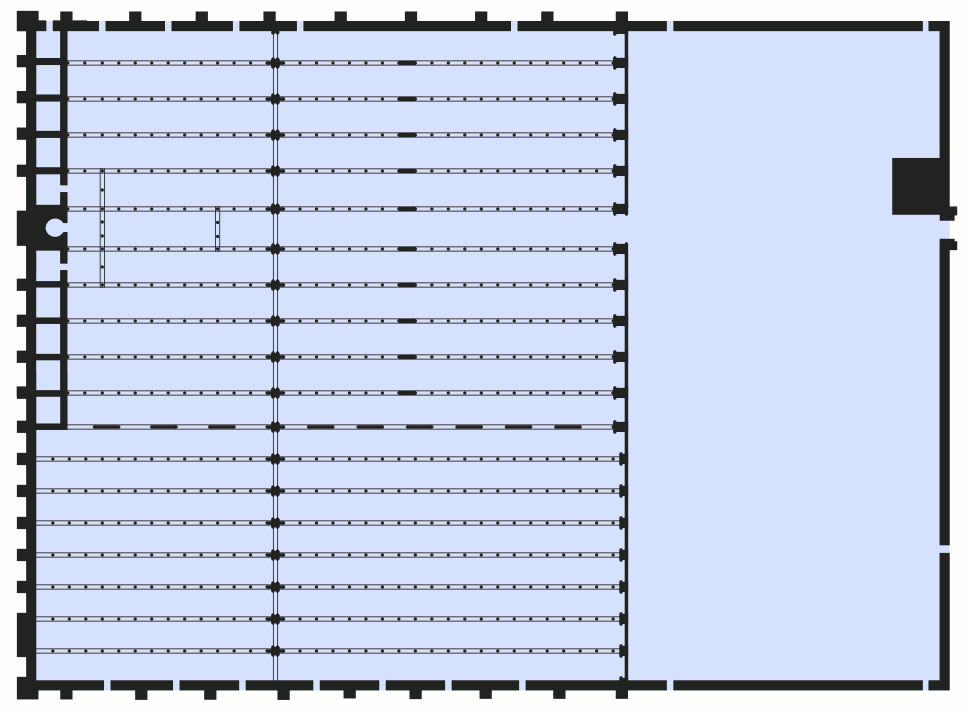

Mezquita
Exterior Mezquita
Interior mezquita
La mezquita es uno de los lugares más importantes de toda la ciudad de Córdoba. Esta ciudad a su vez ostenta el récord de más patrimonios de la humanidad en menos espacio, ya que cuenta con 4, siendo estos la propia Mezquita, La puerta del puente, el Puente Romano y la Torre de la Calahorra

Se empezó a construir como mezquita en el año 784; hasta hace poco se creía que tras la apropiación por los conquistadores musulmanes de la basílica hispanorromana de San Vicente Mártir y la reutilización de parte de los materiales, quedando reservada al culto musulmán, pero estudios arqueológicos más recientes disputan esta hipótesis. El edificio fue objeto de ampliaciones durante el Emirato de Córdoba y el Califato de Córdoba. Con 23 400 metros cuadrados, fue la segunda mezquita más grande del mundo en superficie, por detrás de la Mezquita de La Meca, siendo superada posteriormente por la Mezquita Azul (Estambul, 1588). El muro de la qibla no fue orientado hacia La Meca, sino 51º grados hacia el sur; esto era habitual en las mezquitas de al-Ándalus.
Durante la estancia del Imperio Islámico la Mezquita tuvo 4 grandes grandes expansiones, 3 de ellas fueron durante el emirato y la ultima de estas en la etapa de los reinos taifas
Expansión de Abd-al-Rahman I
Expansión de Abd-al-Rahman II
Expansión de Al-Haken II
Expansión de Almanzor
Fotos varias de la Mezquita y alrededores sacadas del archivo municipal de Córdoba
.jpg)
.jpg)
.jpg)